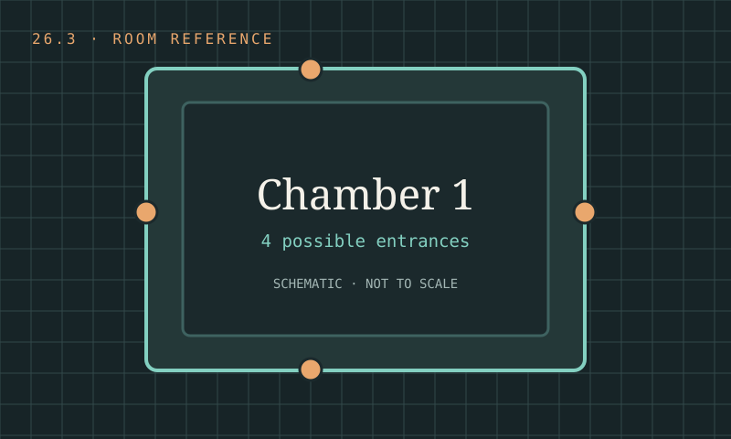
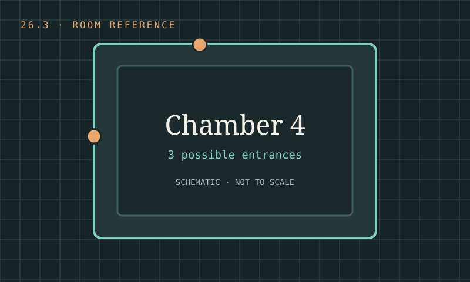
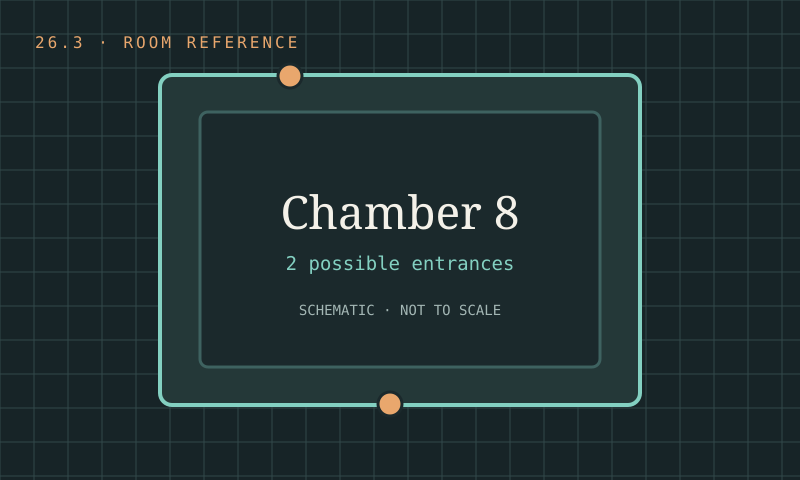
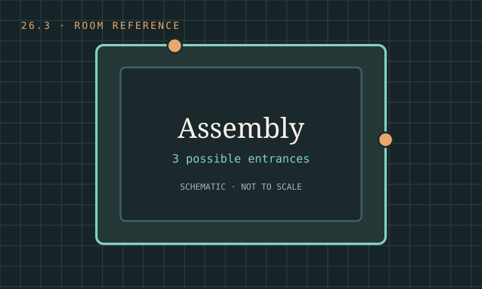
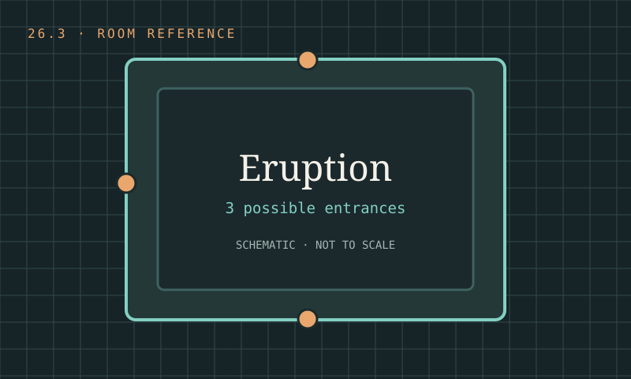
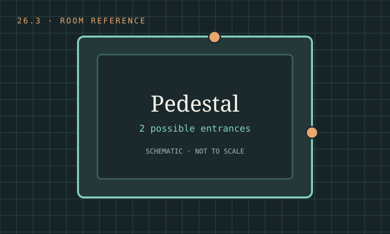
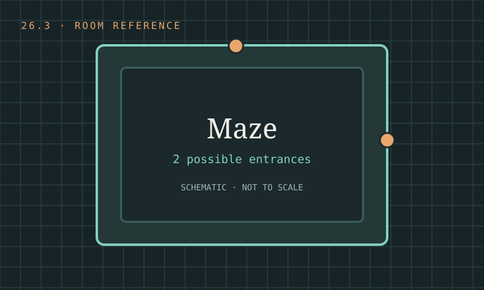

The chamber index.
See where each room connects, how often it appears in our simulations, and how its internal pieces can vary. The PNG diagrams show base-template walls and fixed doorway positions; they do not pretend to show a unique optimal path.

Overhang
Four possible entrance points around the room.
Snoverhang
Four potential corridor connections and several entry heights.

Infestation
Three exit connectors, with a strong lower-branch placement profile.

Hotel
A two-entrance chamber frequently reached from upper corridors.

Assembly
A three-entrance combat room, also eligible at the starting end.

Eruption
One of the four starting-end options, with three possible connections.

Pedestal
Two potential entrances and a distinctive tall chamber structure.

Maze
The slanted room: four lower arms, four quadrants and two possible exits.